🧪 Эксперименты с rohosCrypt
Эксперимент 1. Создание и настройка USB-ключа для входа в систему
Цель: Проверить процесс создания и настройки USB-ключа как основного метода аутентификации. Инструкция: Установите Rohos Logon Key. Подключите USB-накопитель и создайте на нём ключ доступа. Настройте вход в Windows только по USB-ключу (отключив пароль). Проверьте, работает ли вход с ключом и возможен ли вход без него. Анализ: Удобство настройки, надежность хранения ключа на USB.
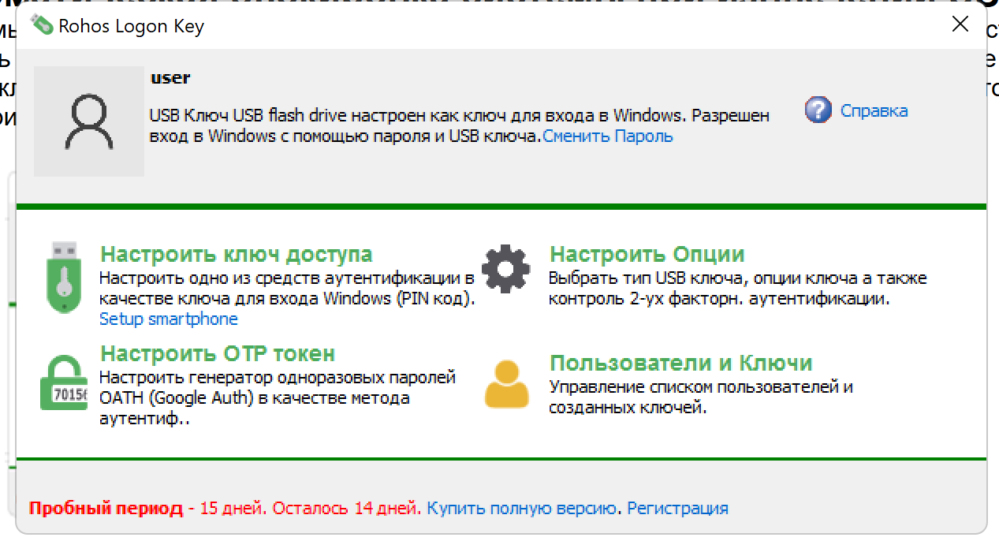
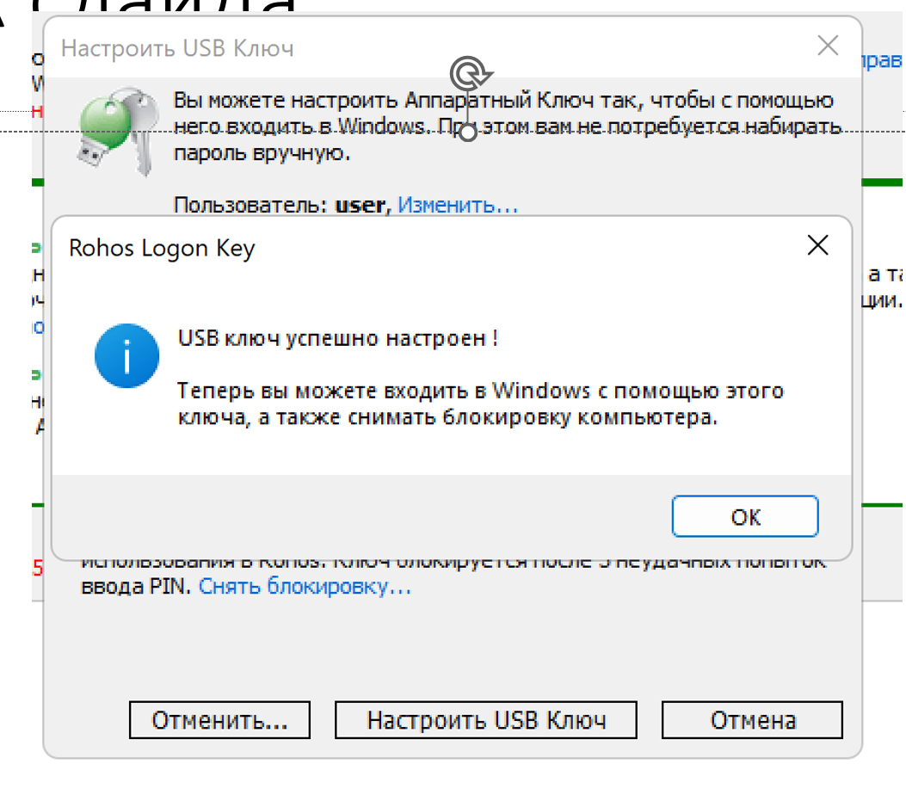
Эксперимент 2: Аварийный вход при потере ключа
Создайте резервный пароль в Rohos: Настройки → Резервный доступ → Установить аварийный пароль. Привяжите пароль к секретному вопросу: Пример: Вопрос: «Первая улица детства?» Ответ: «Солнечная» → Пароль: RohosСолнечная2024!. Восстановление: При утере ключа: — Введите ответ на вопрос → соберите пароль по шаблону. — Используйте его в разделе «Аварийный вход». Важно: Не используйте очевидные вопросы! Храните алгоритм шифрования в тайне.
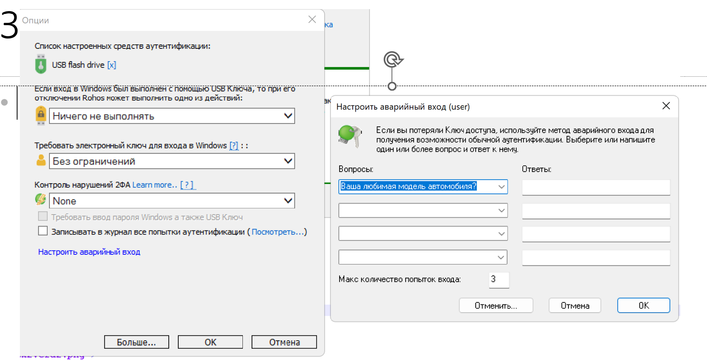
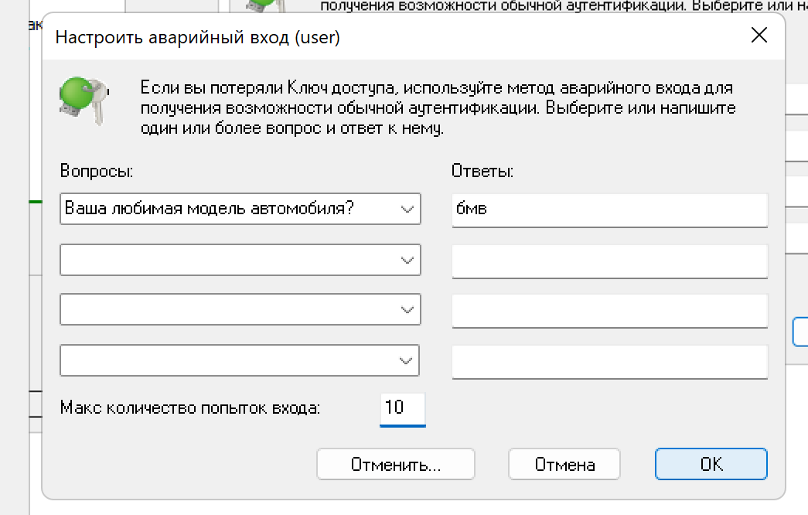
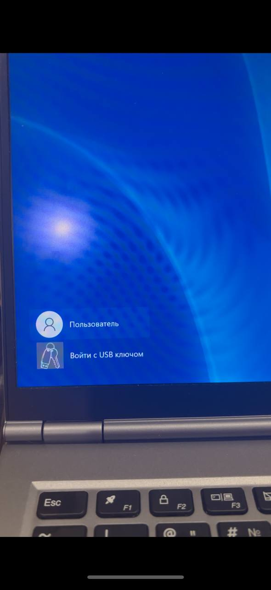
Эксперимент 3: Настроть ОТР токен
Краткая инструкция: Настроить OTP-токен Откройте Rohos Logon Key → раздел OTP-токен. В разделе " способ настройки одноразового пароля" выберите Google..... Нажмите настроить OTP-токен внизу. Попробуйте использовать это в загрузке в систему.
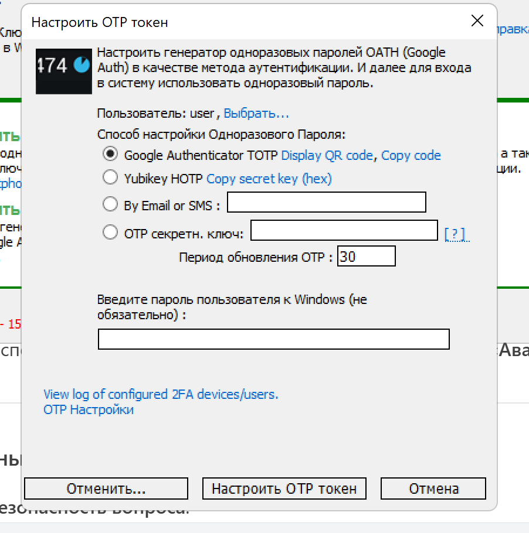
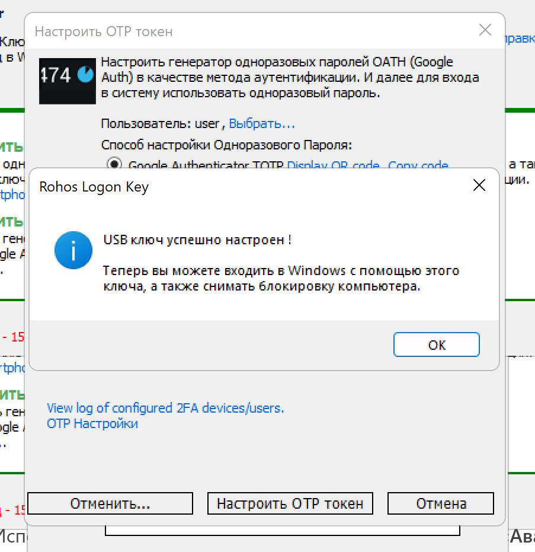
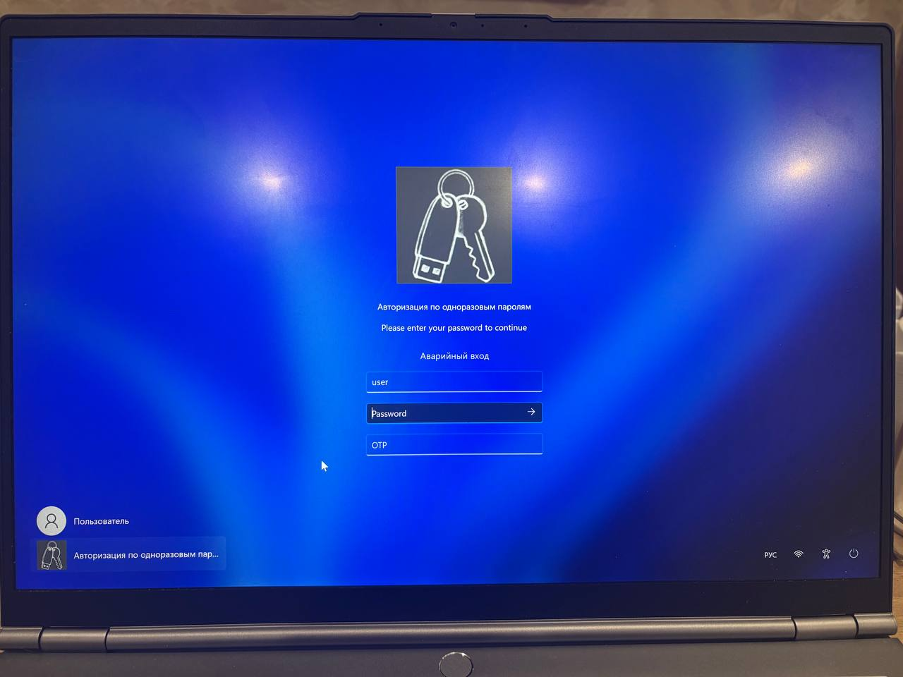
Эксперимент 4: Автоматическая блокировка системы при извлечении USB
Цель: Проверить реакцию системы на извлечение ключа. Инструкция: Настройка блокировки: В Rohos откройте «Настройки» → «Безопасность». Активируйте опцию «Блокировать ПК при извлечении ключа». Проверка: Войдите в систему с USB-ключом. Откройте любой файл (например, документ Word). Извлеките USB-ключ → система должна мгновенно заблокироваться. Анализ: Если экран блокируется → защита активна. Если нет → перезагрузите ПК и повторите шаги.
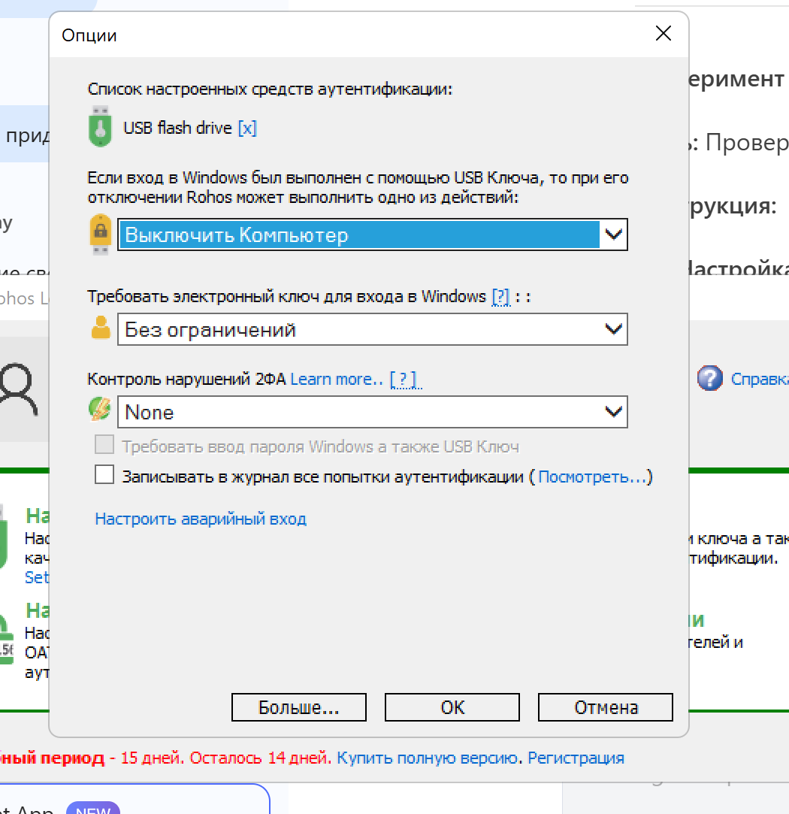
Эксперимент 5: Скрытый том rohosCrypt
Эксперимент 5. Проверка защиты от клонирования USB-ключа Цель: Убедиться, что ключ нельзя скопировать. Инструкция: Клонирование ключа: Вставьте оригинальный USB-ключ. Скопируйте все файлы с него на другую флешку через проводник. Проверка копии: Попробуйте войти в систему с клонированной флешкой. Анализ: Если вход не работает → Rohos защищает ключ от копирования.
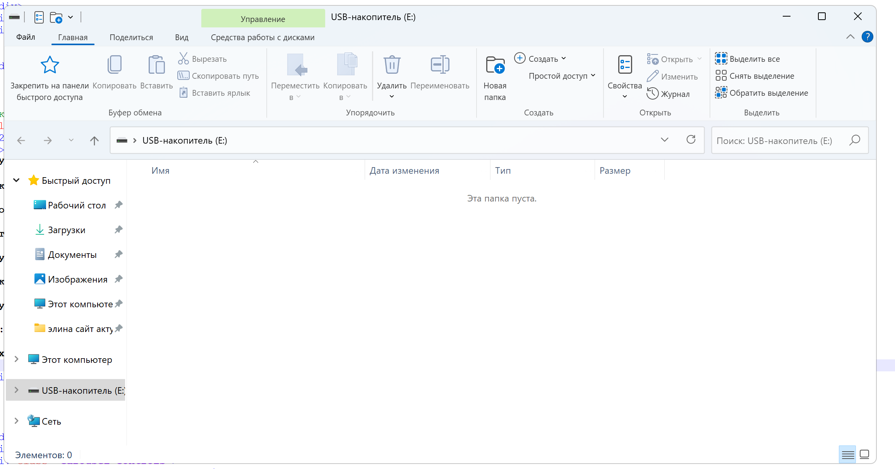
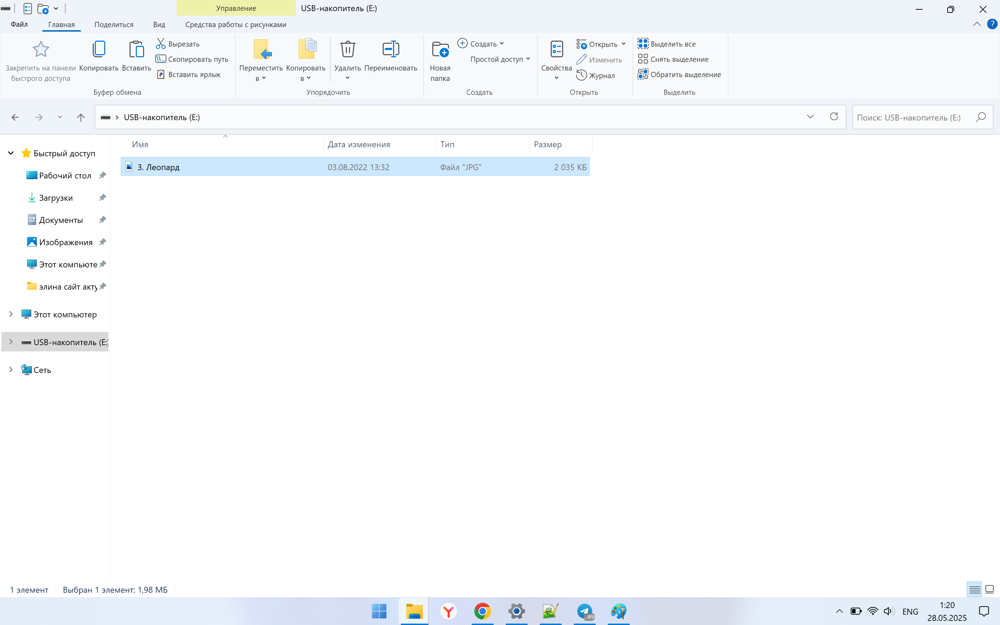